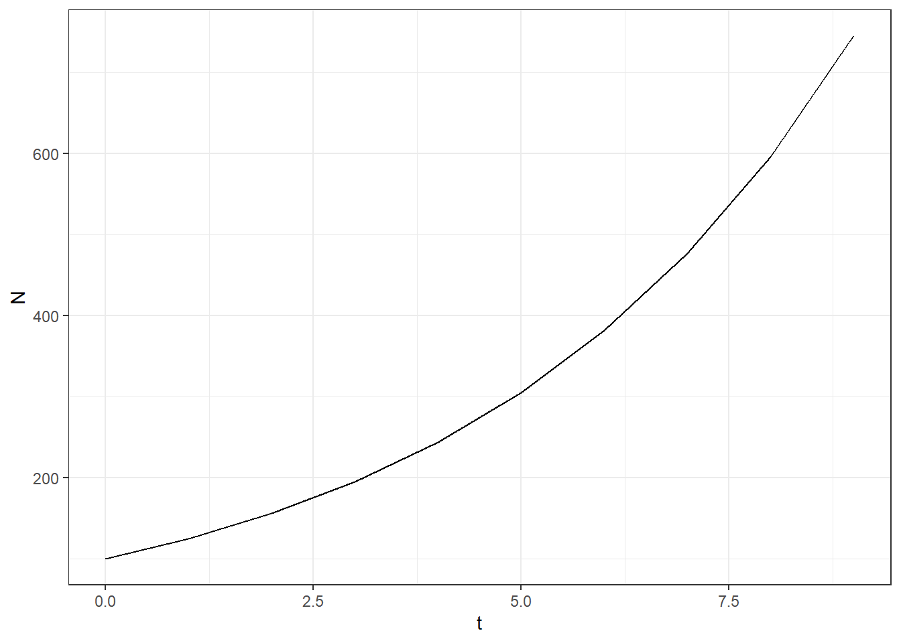
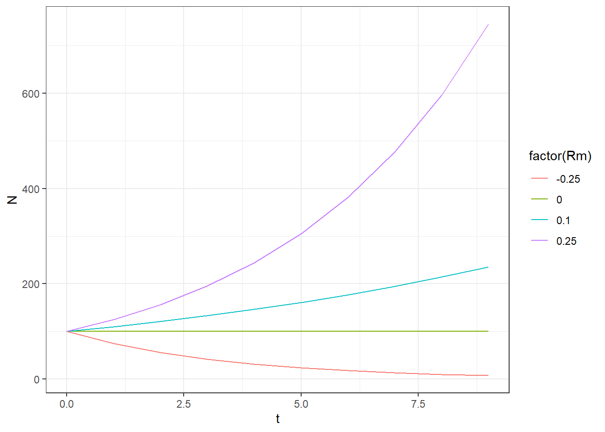
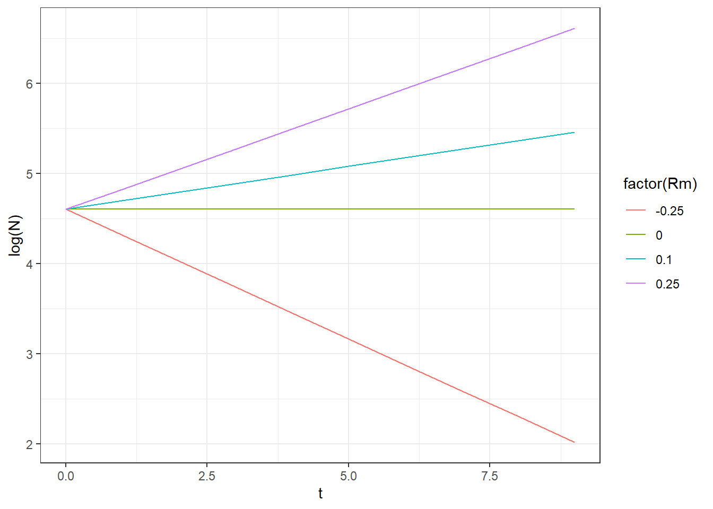
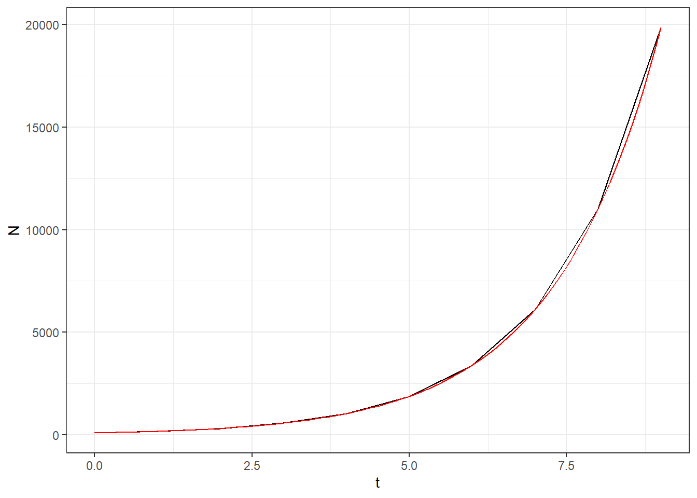
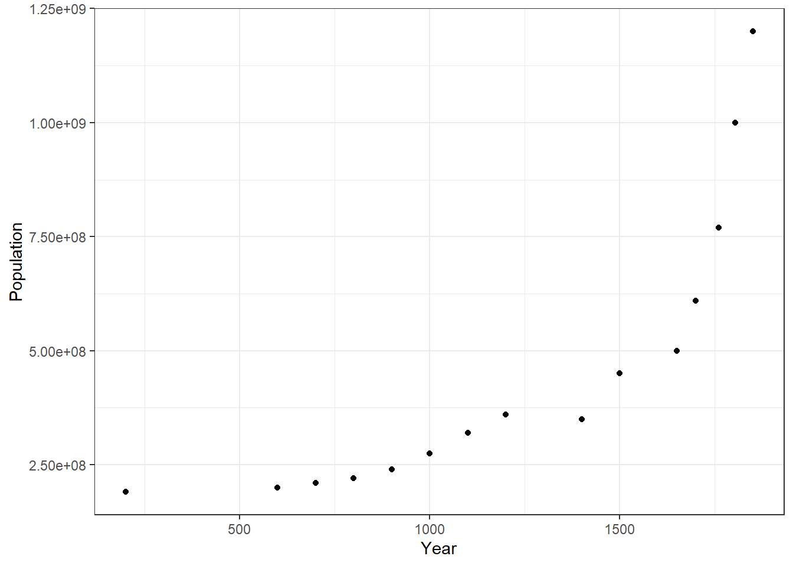
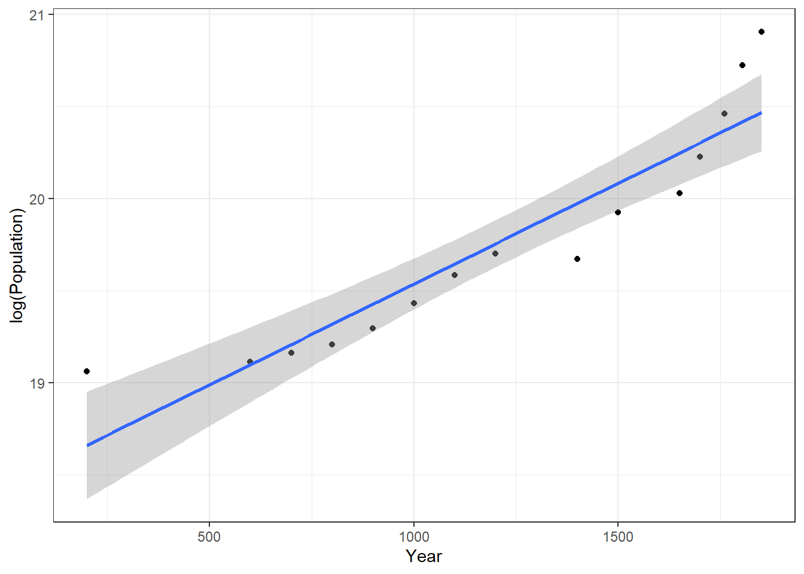
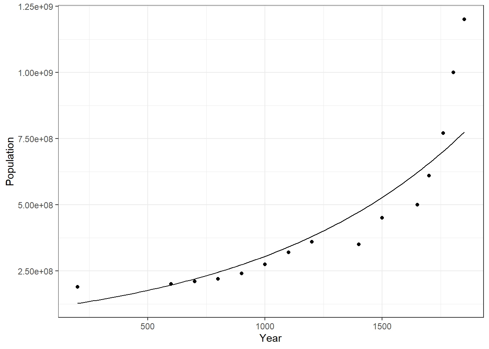

library(tidyverse)
theme_set(theme_bw()) #optionally change the plotting themeLecture 2. Exponential growth
Exponential growth tutorial
Open tidyverse for plotting and data manipulation (includes ggplot2)
What determines whether a population will grow or decline from one year to the next?
Population next year = population this year + births - deaths + net migration
Assume the population is closed so we can leave out migration.
Define population number as \(N\), at time \(t\). \(N_t\) is the population at time t. \(N_0\) is the population at time 0.
\(\Delta\) refers to a change so \(\Delta_t\) is a time increment, and \(\Delta_N\) is the increase in population size
There is a per capita reproductive rate (b for births per animal per unit time) and a per capita death rate (d for deaths per animal unit time)
We can write the change in population size over time as:
\[N_{t+\Delta_t}=N_t+N_t(b-d)\Delta_t\] Simplify to a time step of \(\Delta_t\) = 1. This would be years for most fish, sea turtles, etc., but could be minutes or hours for a microbe.
\[N_{t+1}=N_t+N_t(b-d)\] And simplify again to define the population growth rate as \(R_m=b-d\)
\[N_{t+1}=N_t+N_tR_m\] The change in abundance per unit time is. \[\Delta N/\Delta t=R_mN_t\] Population growth is also defined by the multiplication rate, \(\lambda\) which is \(\lambda=1+R_m\) so that \[N_{t+1}=\lambda N_t\]
Make a hypothetical population with Rm=0.25. Calculate lambda. Make a data frame showing the population growth over 10 years.
Rm<-0.25
lambda<-1+Rm
N0<-100
Population<-data.frame(t=0:9,N=NA)
Population$N[1]<-N0
for(i in 2:10) {
Population$N[i]<-Population$N[i-1]*lambda
}
Population t N
1 0 100.0000
2 1 125.0000
3 2 156.2500
4 3 195.3125
5 4 244.1406
6 5 305.1758
7 6 381.4697
8 7 476.8372
9 8 596.0464
10 9 745.0581We used a loop to calculate the population in each time period from the population in the previous time period. Or, as the population growth rate is constant, we can calculate the population directly with no loop. The number in each time step is the number at the beginning multiplied by \(\lambda\) t times. I made N the number at the beginning of the time step, so 100 is the first number.
Population<-data.frame(t=0:9)
Population$N<-N0*lambda^(Population$t)
Population t N
1 0 100.0000
2 1 125.0000
3 2 156.2500
4 3 195.3125
5 4 244.1406
6 5 305.1758
7 6 381.4697
8 7 476.8372
9 8 596.0464
10 9 745.0581The answer is the same. Here is a plot of the population change over time.
ggplot(Population,
aes(x=t,y=N))+
geom_line()
Because \(\lambda\) is greater than one, the population increases exponentially.
Now let’s plot multiple populations with different Rm values. Note that, for ggplot, we need the data in long format, so the times repeat for each value of Rm.
Rm<-c(-0.25,0,0.1,0.25)
lambda<-1+Rm
N0<-100
Population<-expand.grid(t=0:9,lambda=lambda)
Population$Rm<-Population$lambda-1
Population$N<-N0*Population$lambda^(Population$t)
head(Population) t lambda Rm N
1 0 0.75 -0.25 100.00000
2 1 0.75 -0.25 75.00000
3 2 0.75 -0.25 56.25000
4 3 0.75 -0.25 42.18750
5 4 0.75 -0.25 31.64062
6 5 0.75 -0.25 23.73047view(Population)
ggplot(Population,
aes(x=t,
y=N,
color=factor(Rm)))+
geom_line()
Note that exponential growth is linear on the log scale.
ggplot(Population,
aes(x=t,
y=log(N),
color=factor(Rm)))+
geom_line()
Continuous vs. discrete population dynamics
We can calculate population dynamics either in discrete time (e.g. years, as above) or continuous time (exponential rates).
In discrete time lambda is the proportional change in one time period
\(\lambda=1+R_m\)
\(N_{t+1}=N_t*\lambda\)
and \(\Delta N/\Delta t=R_mN_t\)
Now make the time step smaller and smaller. The instantaneous increase in abundance in each time step is called \(r_m\)
\(\delta N/\delta t = r_m N\)
In continuous time
\(r_m\) is the continuous intrinsic population growth rate. This intrinsic population increase rate is a widely used metric of a populations ability to sustain itself and rebuild following overfishing or any other cause of excess deaths.
If we integrate the differential equation, we get this.
\(N_t=N_0e^{r_m t}\)
With an annual time step, this is equivalent to. \(N_t=N_0\lambda^t\)
And we can convert between continuous and discrete time with logs and exponents.
\(r_m = log(\lambda)=log(1+R_m)\) and
\(R_m=exp(r_m)\)
Fill in some numbers to see how this works.
Rm<-0.1
lambda<-1+Rm
lambda[1] 1.1rm<-log(lambda)
rm[1] 0.09531018exp(rm)[1] 1.1log(lambda)[1] 0.09531018Note that \(r_m\) and \(R_m\) are very similar for small values (<about 2%).
The continuous (exponential) version smooths out the annual time step we had before, which is more visible with a larger \(r_m\)
N0<-100
lambda<-1.8
rm<-log(lambda)
Population<-data.frame(t=0:9)
Population$N<-N0*lambda^(Population$t)
ggplot(Population,
aes(x=t,y=N))+
geom_line()+
geom_function(fun = function(x) N0*exp(rm*x), colour = "red")
Note the units
\(r_m\) is in units of \(1/time\). So it is in \(1/year\) if it was calculated for time in years. You can convert the time scale, by multiplying by the time conversion.
rm_per_day<-0.001 # per day
rm_per_year<- rm_per_day*365
rm_per_year[1] 0.365Humans example
Let’s read in some human population growth data and estimate the population growth rates. This data is from: https://www.worldometers.info/world-population/world-population-by-year/
humans<-read_csv("HumanPopulation.csv") %>%
filter(Year <1900)
ggplot(humans,aes(x=Year,y=Population))+
geom_point()
How can we estimate the population growth rate? Remember that exponential growth is linear if you take the log. Here is the log population with a linear regression added.
ggplot(humans,aes(x=Year,y=log(Population)))+
geom_point()+
stat_smooth(method="lm")`geom_smooth()` using formula = 'y ~ x'
What are the coefficients in this linear regression? First, calculate N as a function of t.
\(N_t=N_0e^{r_m \cdot t}\)
Then take the log.
\(log(N_t)=log(N_0)+r_m\cdot t\)
So, the coefficients of a linear regression of \(log(N)\) against \(t\) are the log of the starting population, and and the exponential population growth rate \(r_m\).
Do the linear regression and pull out the coefficients.
humans.lm<-lm(log(Population)~Year,data=humans)
summary(humans.lm)
Call:
lm(formula = log(Population) ~ Year, data = humans)
Residuals:
Min 1Q Median 3Q Max
-0.30093 -0.11945 -0.06203 0.05440 0.43845
Coefficients:
Estimate Std. Error t value Pr(>|t|)
(Intercept) 1.844e+01 1.569e-01 117.506 < 2e-16 ***
Year 1.095e-03 1.202e-04 9.113 5.23e-07 ***
---
Signif. codes: 0 '***' 0.001 '**' 0.01 '*' 0.05 '.' 0.1 ' ' 1
Residual standard error: 0.2277 on 13 degrees of freedom
Multiple R-squared: 0.8646, Adjusted R-squared: 0.8542
F-statistic: 83.05 on 1 and 13 DF, p-value: 5.227e-07So, we can calculate the following.
rm<-coef(humans.lm)[2]
rm Year
0.001095043 lambda<-exp(rm)
lambda Year
1.001096 N0<-exp(coef(humans.lm)[1])
N0(Intercept)
102084597 Let’s add the predicted population to the plot.
ggplot(humans,aes(x=Year))+
geom_point(aes(y=Population))+
geom_function(fun=~N0*exp(rm*.x)) 
The fit seems okay, except for a large in increase in recent years.
We can also directly calculate the predicted population in the data frame, which we can also use in the plot.
humans$Predicted<-N0*lambda^humans$Year
ggplot(humans,aes(x=Year))+
geom_point(aes(y=Population))+
geom_line(aes(y=Predicted))The plot looks identical.